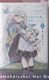

Le licenze, le nuove edizioni e gli arrivi anime annunciati durante la fiera. Una selezione verificata, con le fonti originali a portata di clic.
28 ottobre – 1 novembre 2026Dati delle opere verificati il 2 novembre 2026Aggiornamento editoriale · fonti verificate
LUNEDÌ 2 NOVEMBRE 2026 · AGGIORNAMENTO POST-FIERA
Annunci verificati: il riepilogo ufficiale Star Comics
Verificato il 2 novembre
Lucca Comics & Games 2026 si è conclusa domenica 1 novembre. Oggi Star Comics ha pubblicato il riepilogo editoriale ufficiale delle 10 opere annunciate il 1° novembre, confermandone autori e consistenza editoriale: non si tratta di dieci ulteriori licenze annunciate il 2 novembre. Le schede complete con le copertine restano nella sezione Star Comics.
Star Comics · Conferma ufficiale
Nuove edizioni e classici
Kiseiju Full Color Edition (Hitoshi Iwaaki, 8 volumi); Nekomajin (Akira Toriyama, volume unico in New e Ultimate Edition); Mushishi New Edition (Yuki Urushibara, 5 volumi); Cotton Star – Wata no Kunihoshi (Yumiko Oshima, cofanetto di 2 volumi).
La conferenza J-POP Manga risale al 30 ottobre e il panel Star Comics al 1° novembre; i riepiloghi pubblicati successivamente mantengono la data originale degli annunci. Le uscite annunciate per il 2027 non vengono considerate già pubblicate.
LUCCA 2026 · ANTEPRIME EDITORIALI · VERIFICA 2 NOVEMBRE
In Your Face Comix: manga alternativi, horror e fumetto d'autore
8 opere in evidenza
Le anteprime presentate per Lucca Comics & Games 2026 (28 ottobre–1 novembre). Non sono nuove licenze annunciate il 2 novembre: le date di pubblicazione delle anticipazioni risalgono soprattutto a ottobre. Dove non esiste un dato editoriale verificato non viene inventato.
Manga · Anteprima italiana
Unmei
Autore
Kōichi Matsuda
Trama / contenuto: raccolta di storie brevi del giovane mangaka, proposta per la prima volta in Italia da In Your Face Comix. L'autore era ospite a Lucca per incontri e firmacopie.
Trama / contenuto: horror corporeo e grottesco, nel segno dell'immaginario perturbante di Hideshi Hino. Presentate alcune pagine in anteprima prima della fiera.
Trama / contenuto: conclusione del dramma storico di George Akiyama sulla sopravvivenza e gli abissi della natura umana. In anteprima a Lucca e in vendita da novembre 2026.
Mauro Cicarè, Alberto Lavoradori e collettivo di autori
Edizione
208 pagine · colori · brossurato · €22
ISBN
9791257350130
Trama: una faida fra i demoni E-DNA-S minaccia gli umani, ma l'indistruttibile Mr. LOOP prova a fermarli. Quarto volume delle avventure del personaggio; distribuzione annunciata dal 9 dicembre 2026.
Ospiti a Lucca: Kōichi Matsuda (Unmei) e Minoru Sugiyama (Girl Device) allo stand 304 del Padiglione Napoleone per firmacopie e sketch. Il 3 novembre è previsto un ulteriore incontro a Forbidden Planet, Roma: appuntamento post-fiera, non nuovo annuncio manga. Regolamento e programma ↗
ULTIMO GIORNO · DOMENICA 1 NOVEMBRE 2026
Novità e appuntamenti di oggi
Aggiornato il 1° novembre
Ultimo giorno di Lucca Comics & Games 2026. Qui trovi eventi confermati e annunci editoriali da verificare: un evento in programma non equivale automaticamente a una nuova licenza.
Star Comics · Novità manga 2027
Star Comics Soon: il 2027 comincia qui
La redazione Star Comics presenta le novità manga previste per la prima parte del 2027 durante una diretta con AnimeClick. Annunci disponibili: sono state presentate dieci opere, ora raccolte nella sezione Star Comics con autori, trame e dettagli delle edizioni.
Maxi showcase e live drawing con l'autrice delle due celebri serie fantasy e sentimentali. Si tratta di un incontro speciale, non di un nuovo annuncio di licenza.
Live drawing «La Luce prende forma» e presentazione dell'artbook LIGHT, una raccolta di illustrazioni dedicate a frammenti di vita giapponese. Incontro alla Sala Tobino.
Un incontro dedicato alla compositrice delle colonne sonore di Cowboy Bebop, Ghost in the Shell: Stand Alone Complex e altre opere dell'animazione giapponese.
Nota editoriale: gli annunci J-POP Manga già presenti in archivio risalgono alla conferenza del 30 ottobre; gli articoli pubblicati il 1° novembre possono riepilogare annunci precedenti e non vengono duplicati come nuove licenze di oggi.
01 NOVEMBRE 2026 · ANNUNCI CONFERMATI
Star Comics: tutte le nuove licenze
10 opere annunciate
Le novità presentate durante la diretta AnimeClick a Lucca Comics & Games 2026. I conteggi dei volumi sono quelli comunicati nell’annuncio; le date di uscita non sono state indicate nel testo consultato.
Copertina inglese Full Color Collection
Star Comics
Kiseiju Full Color Edition
Autore / autori
Hitoshi Iwaaki
Volumi pubblicati
8 volumi · concluso
Trama Gli alieni parassiti arrivano sulla Terra e prendono possesso degli esseri umani. Shinichi deve imparare a convivere con un parassita che ha occupato la sua mano, mentre attorno a lui si moltiplicano gli omicidi.
Trama Una creatura felina dotata di poteri straordinari affronta nemici e situazioni assurde, tra gag e parodie che incrociano anche l’universo di Dragon Ball.
Edizione: New Edition brossurata 11,5 × 17,5 cm con alette; Ultimate Edition cartonata 15 × 21 cm, sovraccoperta e pagine a colori.
Trama L’amicizia d’infanzia tra Ha-neul e Mincheol cambia quando alcuni imprevisti mettono in discussione la loro convinzione di non potersi innamorare.
Trama Rapunzel, cresciuta isolata in una torre, conosce Mikel e scopre per la prima volta il mondo esterno, ma una visita al villaggio porta alla luce una verità inquietante.
Trama Dopo una separazione difficile, il pompiere Tae-Yang ritrova Jiwan, il suo primo amore. Sette appuntamenti potrebbero dare a entrambi una seconda possibilità.
Trama Una studentessa si avvicina a un ragazzo che porta un nome legato al suo primo amore. Dietro un’apparente incompatibilità scoprirà una natura gentile.
Trama ChibiNeko è una gattina convinta di essere una bambina. Accolta dalla famiglia Suwano, sogna un futuro con Tokio, in una storia sospesa tra fantasia e realtà.
Edizione: Cofanetto da collezione; albi 15 × 21 cm con sovraccoperta e quasi 500 pagine.
Trama Nell’oscurità di un fantamedioevo crudele, Elis, una giovane orfana, stringe un patto che le offre il potere di cambiare il mondo, ma le conseguenze potrebbero essere terribili.
Trama Nel Far West, Jimmu Godspeed attraversa una terra di fuorilegge dopo un confronto con suo padre, il leggendario Godspeed. Il suo obiettivo è diventare un marshal.
Trama Chi muore senza aver conosciuto l’amore può rinascere come cupido. Le nuove cupidi usano armi da fuoco e si scontrano per decidere il destino sentimentale degli esseri umani.
Trama Nel Giappone feudale, tre giovani di classi sociali diverse mettono in discussione gerarchie e ingiustizie. Kamui, emarginato, trova nelle arti ninja una strada per sopravvivere.
Kim Suji (opera originale); Soo-jin Kim, P e Namu (adattamento)
Volumi pubblicati
Webtoon in corso · conteggio italiano non annunciato
Trama Maximilian viene data in sposa a un cavaliere di umili origini. Dopo una lunga separazione, lui ritorna famoso: per entrambi il matrimonio diventa l’inizio di un rapporto da ricostruire.
Trama Ashito Aoi, talento del calcio giovanile dal carattere difficile, viene notato da un allenatore che gli offre una possibilità nell’agonismo di alto livello.
23 volumi originali · concluso; altre edizioni con diversa suddivisione
Trama Tohru Honda va a vivere con la famiglia Sōma, legata a una misteriosa maledizione dello zodiaco. La sua gentilezza avvicina persone segnate da segreti dolorosi.
Trama Penelope si risveglia nel ruolo della cattiva di un simulatore romantico alla difficoltà massima. Ogni scelta può portarla alla morte: deve trovare una via di fuga.
Webtoon · 6 volumi nell’edizione inglese Yen Press
Trama Lo studente Sangwoo elimina dal progetto universitario i nomi dei compagni che non hanno contribuito. Il brillante Jaeyoung reagisce e fra i due nasce un rapporto complicato.
Trama Koyuki si è costruita un muro emotivo per stare lontana dagli altri. L’arrivo del compagno Minato e l’amicizia con altri due ragazzi cambiano il suo liceo.
Trama Takuya Seo nasconde la passione per gli anime davanti alle ragazze popolari della classe. Una conversazione rivela che Amane conosce sorprendentemente bene la sua serie preferita.
14 volumi originali · concluso; nuova edizione giapponese in 7
Trama Noriko viene trasportata in un altro mondo e incontra il guerriero Izark. I due devono sfuggire a pericoli e profezie mentre imparano a comunicare e fidarsi.
Trama A Tokyo gli alieni attraversano controlli di frontiera come turisti. Due liceali lavorano per un’agenzia che indaga su traffici e pericoli tra la Terra e il cosmo.
L'annuncio manga di Akari è distinto dalle altre opere BAO già pubblicate, annunciate prima della fiera oppure disponibili in anteprima a Lucca. Queste cinque opere non sono cinque nuove licenze annunciate in fiera.
ANNUNCIO · MANGA
Akari
Edizione spagnola · copertina di riferimento
BAO · Nuova licenza
Akari
Autore / autori
Marco Kohinata
Formato / volumi
Volume unico · manga autoconclusivo
Trama Kagari, artigiano di vetrate, ritrova il desiderio di creare grazie alla nipote Akari, dopo la morte della moglie. Ma lei custodisce un segreto.
10 volumi originali · concluso; primo volume italiano ottobre 2026
Trama Nel Giappone Sengoku, l'erede di un signore della guerra è una ragazza, cresciuta come un guerriero: la rilettura della leggenda di Uesugi Kenshin.
Le immagini di riferimento di edizioni estere e precedenti sono contrassegnate come tali. Per Stato avanzato compare un segnaposto tipografico, non una copertina spacciata per ufficiale.
02 / STREAMING E CINEMA
Anime
7 aggiornamenti selezionati
Visual dell’annuncio Dynit
Dynit / DAnime
Bakemonogatari
Opera originale
NISIOISIN (novel originale); illustrazioni VOFAN
Formato / durata
Anime TV · 15 episodi
Trama Koyomi Araragi incontra ragazze coinvolte in fenomeni soprannaturali e prova ad aiutarle a confrontarsi con traumi e misteri personali.
Nagaru Tanigawa (novel); Noizi Ito (illustrazioni)
Formato / durata
Anime TV · 28 episodi complessivi (versione 2009)
Trama Haruhi, convinta che il mondo nasconda eventi straordinari, fonda la Brigata SOS. Il compagno Kyon scopre che i suoi amici nascondono identità incredibili.
Trama Mitsuha, studentessa di campagna, e Taki, ragazzo di Tokyo, iniziano inspiegabilmente a scambiarsi i corpi. Cercano di incontrarsi oltre il tempo.
03 / NUOVE OPERE E PROSSIMI VOLUMI · DOKUSHO EDIZIONI
Light novel
10 annunci · 5 nuove opere
Dokusho Edizioni ha mostrato cinque nuove opere durante Lucca Comics & Games 2026. A parte, l’editore aveva presentato cinque nuovi volumi di serie già note il 23 ottobre, con preordini annunciati dal 4 novembre. Le due serie di notizie sono separate qui sotto, per non confondere nuove licenze ed edizioni successive.
✦ ANNUNCI LUCCA · 30–31 OTTOBRE
5 nuove light novel in arrivo
Nuove opere presentate da Dokusho Edizioni durante la fiera e riconosciute nelle grafiche degli annunci. Le copertine sono tratte dalle immagini promozionali pubblicate dall'editore; titoli di lancio, date e ISBN italiani non sono ancora riportati dove non comunicati.

Copertina dal materiale Dokusho
Dokusho · nuova opera
Kakushite Mahōtsukai Noi Garené wa 100-nen-go, Hanayome to Natta
Fantasy romantico · Romance · Drammatico
Autore / autori
Eiko Mutsuhana (六つ花えいこ)
Volumi pubblicati
3 volumi giapponesi · concluso
Trama La maga Noi accoglie come allievo un ragazzo destinato a ospitare il Re Demone. Dopo un sacrificio, si risveglia cent’anni più tardi davanti a un uomo che vuole sposarla.
Trama Kafka vive nell’unico villaggio di una caverna sospesa nel cielo. Dopo aver incontrato il viaggiatore Hayate, parte sul vecchio aereo del nonno per conoscere il mondo.
Trama Per la pace fra umani e demoni, un Re Demone viene costretto a un matrimonio politico con l’Eroe Reinhardt. Fra incomprensioni e minacce nasce una relazione inattesa.
Trama Konoe si reincarna in un mondo in cui i desideri diventano magie. Segnato dalla solitudine, cerca disperatamente un legame autentico e incontra una giovane malata.
Trama Nell’annuncio Dokusho è presentata come una commedia scolastica legata all’evocazione di un demone. La sinossi completa non è ancora confermata: evitare anticipazioni inventate.
Annunciati prima della fiera: sono continuazioni o nuovi volumi, distinti dalle cinque nuove opere qui sopra. Le copertine delle schede seguenti sono riferimenti internazionali.
Copertina internazionale di riferimento
Dokusho Edizioni
Il monologo della speziale · vol. 10
Autore / autori
Natsu Hyūga; illustrazioni Touko Shino
Volumi pubblicati
16 volumi giapponesi; annuncio del volume italiano 10
Trama Maomao, giovane esperta di medicine, viene venduta al palazzo imperiale. Il suo talento per veleni e diagnosi la coinvolge in intrighi di corte.
Primo anno: 11 volumi + 3 intermedi; annunciato il 9° italiano
Trama Kiyotaka Ayanokōji frequenta un liceo d’élite nel quale i privilegi dipendono dai punteggi. La competizione tra classi nasconde strategie e manipolazioni.
13 volumi giapponesi pubblicati; annunciato il 3° italiano
Trama I fratelli gamer Sora e Shiro arrivano a Disboard, un mondo nel quale ogni conflitto si risolve giocando. Per sopravvivere devono vincere sfide impossibili.
Aggiornamento del 2 novembre: il riepilogo ufficiale Star Comics conferma le dieci opere annunciate il 1° novembre, senza nuovi annunci attribuiti impropriamente al giorno successivo. Le date degli annunci di manga e anime si riferiscono ai resoconti delle conferenze; Magic Press ha annunciato cinque manga e un fumetto francese il 31 ottobre; BAO ha annunciato il manga Akari e presentato in fiera altre opere già annunciate in precedenza; le cinque nuove opere Dokusho sono documentate nelle grafiche social del 30–31 ottobre, mentre cinque volumi delle serie già in catalogo sono stati presentati il 23 ottobre. I conteggi dei volumi si riferiscono alle edizioni originali (generalmente giapponesi), salvo dove diversamente indicato; i numeri italiani possono essere diversi. Per gli anime sono riportati episodi o formato. Le uscite indicate sono previsioni degli editori, soggette a variazioni. Questa pagina non si aggiorna automaticamente e non costituisce un calendario completo degli eventi.